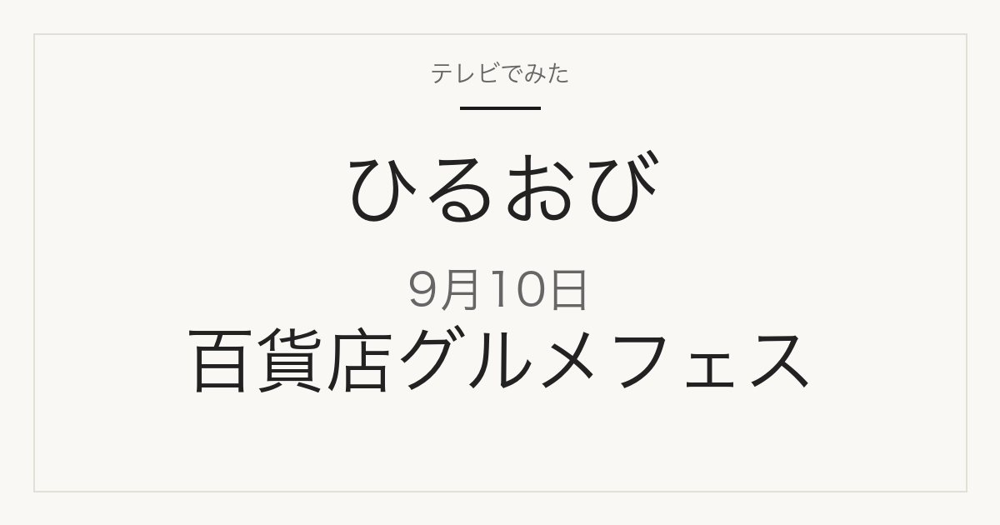

01
集まるのは38店舗
日本各地から集結すると案内されています。内訳は放送で明かされます。
テレビ紹介商品の記録メディア
この記事には広告・アフィリエイトリンクが含まれる場合があります。
2026年9月10日（木）放送
TBS系の人気番組で紹介されたグルメ38店舗が集結／ポルノグラフィティの素顔
これは放送前の記事です。番組公式の番組表で確認できた内容だけを掲載しています。店名・商品名・価格は、2026年9月10日時点の番組公式の案内には記載がありません。放送後、番組公式や店舗公式で確認できたものからこのページに追記します。
グルメフェス企画の予告を見る
特集概要
この回のテーマは、百貨店グルメフェスで紹介される全国の絶品・行列グルメです。番組公式の案内は「TBS系の人気番組で紹介された絶品＆行列グルメ！38店舗が集結」と伝えています。個別の店名・商品名・価格・開催場所は、番組公式の案内には書かれていません。
01
日本各地から集結すると案内されています。内訳は放送で明かされます。
02
過去にTBS系の人気番組で取り上げられた絶品グルメと行列店が対象と案内されています。
03
デビュー27周年。田舎暮らしと世界一周旅行のエピソードが取り上げられる予定です。
04
同じ回で放送が予定されている企画です。
上の内容は、TBS番組表の2026年9月10日10時25分の欄（2026年9月10日確認）に記載されているものです。番組内容は変更になる場合があります。
放送後、このページに次の情報が加わります。ブックマークしておけば、同じURLのまま最新の内容を見られます。
掲載するのは、番組公式か店舗・百貨店の公式情報で確認できたものだけです。
TBS 番組表（2026年9月10日 10:25〜11:55 の欄）
当サイトは番組公式サイトではありません。放送内容は変更になる場合があります。